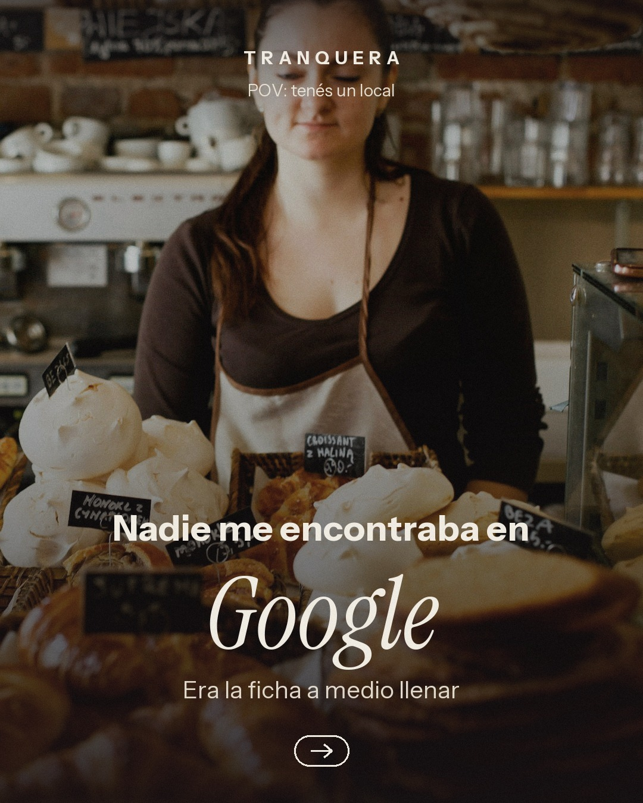
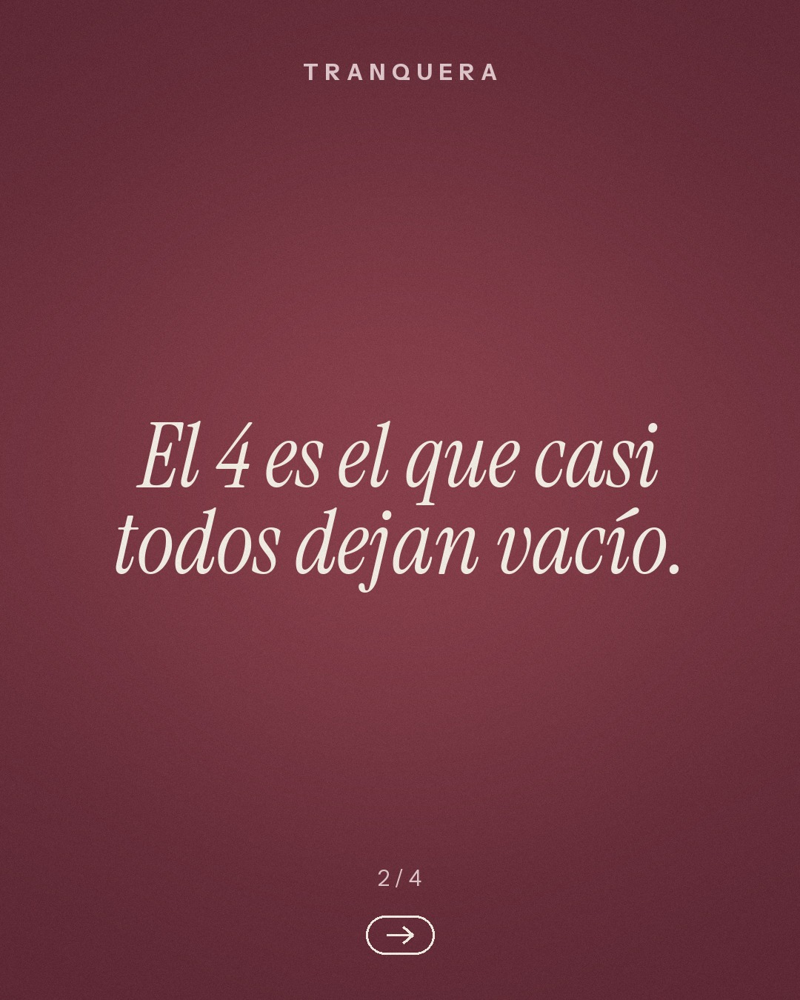

Nadie me encontraba en Google
Era la ficha a medio llenar
- Tapa
- Segunda tapa: el casillero que casi todos dejan vacío
- Nombre, rubro, horario, teléfono, fotos, web y reseñas: mal cargado vs bien cargado (ya producido, carrusel-ficha)
- Cierre: guardalo + palabra clave
FICHA Comentá FICHA y te revisamos la tuya por privado.
El interior ya está hecho; cambia solo la tapa.